Recording Audio¶
Now it's time to learn how to record your own instrument or vocal tracks into Waveform. First, you will learn how to configure track inputs for recording. Next, you will learn how to use Waveform's built-in metronome to provide a reference click, in order to to keep your recordings in time.
Configure the Input¶
We covered audio device setup back in Audio Device Setup. Refer back that chapter if you have any questions about setting up your audio interface.
As a reminder, before recording with Waveform you need to use the Auto-Detect feature to establish proper recording sync between playback tracks and newly recorded tracks. This essential step, calibrates the timing offset so that system latency doesn't throw off the timing of your overdubs. Re-run Auto-Detect test anytime you change your interface hardware or buffer setting. The [Auto-Detect procedure] is explained in detail in Chapter 4.
⚠️ Warning: To configure Waveform for recording you must use the Auto-Detect feature along with a hardware loopback. If you don't then your overdubbed tracks will not be in sync with existing tracks. While this is not difficult, it is essential to do this manual step anytime you change the Audio Device Setup.
The Input Object¶
At the far left of every track, you will find the input section. Each track has an input object that looks like a rectangular arrow pointing right.
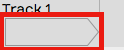
Track Input Object
💡 Tip: If you don't see the input objects, click the Show/Hide Inputs (Shift + F12) button at the top right corner of the Edit tab.
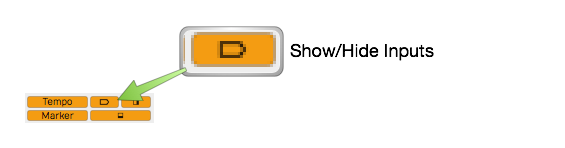
Show/Hide Inputs Button
Click on an input object to see a menu of options. From the menu, select which hardware input to use for recording to this track. You can set it to No input or select any input from your audio interface. In this case it's set to Input 1.
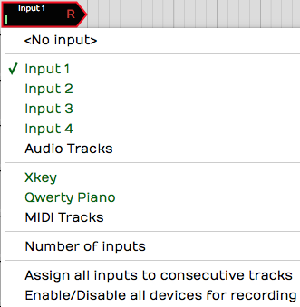
Input Menu
When you select an input, the input object shows the input name, a real-time input meter, and the record arm "R" button. Also, a full set of input properties appears in the Actions panel.

Input Controls & properties
Customizing Input Names Globally¶
If you are happy with the default input names that's great, however, you can customize them with friendlier names using the Alias property.
To change your hardware input alias names globally, go the Settings tab, Audio Devices page. Select an input in the Channels list and edit the Alias name in properties.
Customizing Input Names for an Edit¶
There is another way to rename inputs, but only for the current Edit. In the Edit, select an input and notice the Alias name in the Actions panel. Change this to customize the input name for that particular song. As an example, you could use this to indicate the microphone used in the session.
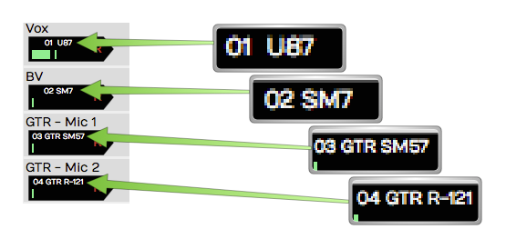
Customized Input Names Using the Alias Property
About MIDI Inputs¶
Notice that on the input menu, you can choose MIDI interface inputs. There's really no difference between an audio and a MIDI track. A track can contain Audio clips or MIDI clips. You just need to set the input appropriately and insert the correct kind of plugins.
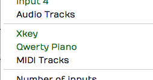
MIDI Devices on the Inputs Menu
In essence a track behaves like an audio track if you set an audio input; it works like a MIDI track if you set a MIDI input and insert a virtual instrument plugin.
Setting Up Inputs for Multi-track Recording¶
It's very convenient to assign all inputs to consecutive tracks using Assign all inputs to consecutive tracks from the inputs menu. It does exactly what the name says, allowing you to quickly set up for multi-track recording. This is great if you're setting up to record a live performance through a digital mixer with a lot of inputs.
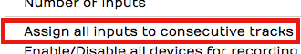
Assign All Inputs from the Input Menu
Number of Inputs¶
This feature is something uniquely Waveform. You can set up more than one input on a single track, up to four inputs assigned to a track.

Assign up to Four Inputs to One Track!
Now, if you record with more than one input armed, you will get a separate clip for each. This results in stack of audio clips.
A good use of this feature is to have several recording chains configured and ready to go, when auditioning microphones and preamps. Simply arm the input you want to try and away you go. It makes it super efficient to switch to a different mic/preamp combination by simply arming the desired input.
Enable a Track for Recording¶
To enable (arm) a track for recording, click the R symbol on the input object. The R illuminates to indicate that the track has been armed for recording.
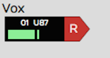
Input Armed for Recording
Test the input signal. If you're using a microphone or a guitar, play a note or have the singer sing something. You should see the meter moving on the input while testing. If not, check your input level on the hardware and make sure phantom power is on if necessary for the mic.
💡 Tip: Once recording has started you can still click R to enable and disable recording on the fly. This allows you to do manual punch-in and punch-out style recording. Here is a video that explains Punch In/Out on the Fly.
Hit Record¶
With the input setup done, recording is a matter of clicking Record (R) on the Transport. While recording, Waveform draws the waveform on the track. To stop recording press Spacebar.
Recording always starts at the cursor position. There are several ways and options to stop recording which will be explained in a bit.
Enable Recording for All Inputs at Once¶
If you are doing multitrack recording with many inputs you can arm all the tracks at once from the input menu using the option Enable/Disable all devices for recording (Cmd + R / Ctrl + R). You can even use this on the fly during recording to start and stop recording without stopping the transport.
Input Meters¶
Click on an input to select it. Notice the large meter in the Actions panel. This gives you a good reference for setting up the input level.

Large input meter in the Actions panel
💡 Tip: As a rule of thumb, you want to set input level to hover around the middle of the range shown on this meter. The input level is adjusted using the gain controls on your audio interface or preamp.
If you're doing multi-track recording and you want to see large meters for all the tracks at once, press F12. Waveform will go into "big meters" mode. This superimposes a very large meter onto each track.

Big Meters Mode
📝 Note: The big meters obscure your view of clips on the tracks, so you will want to toggle it off (F12) when not recording.
Dragging the Input Object Track to Track¶
Here's a unique aspect of the input objects. You can drag the input object from track to track. For example, say you recorded something on track one, and now you want to record something else using the same microphone onto track two. Simply, grab the input object and drag it from track one to track two. The set up is done instantly.
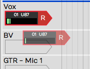
Dragging and Input to other Track
📝 Note: Dragging the input track to track is a really useful function in Waveform. Once you start using this feature you will miss it when you record with any other DAW!
Renaming a Track¶
To rename a track, click directly on the track name, then edit the Name property in the Actions panel. A really quick way to do this is to click Name, press Tab, and start typing. As soon as you tab off the Name property or click elsewhere in Waveform, the new track name will be set.
Recording Steps in Review¶
Here is a review of all the steps needed to test your recording setup:
- Arm the track or tracks for recording by clicking 'R' on the track input.
- Make sure Loop is turned off in the transport bar.
📝 Note: Waveform supports loop recording but we'll get into that in a later chapter.
- Make sure the cursor is rewound to beginning by clicking Return-to-zero (Home) in the transport bar.
- Verify that Click (C) is turned off (for now) in the transport bar.
- Click Record (R) in the transport bar. Play something into the input using your instrument or your voice depending on the kind of input selected.
📝 Note: As you record, you'll see the meters and you'll also see the waveform start to draw on the Audio clip.
- Press Spacebar to stop recording.
- To hear what you recorded, click rewind then press Spacebar to play. You should be able to hear what you just recorded.
💡 Tip: If your recorded take just isn't really going well, you can press Abort or Abort & Restart on the transport. These options only appear during recording.
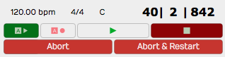
Abort and Abort & Restart During Recording
Working with the Click¶
While recording, it's often very helpful to have an audible timing reference. Waveform has a built-in metronome that offers a steady click for just this purpose.
Enabling the Click Track¶
To enable the metronome click, turn on Click (C) in the Master section. That turns it on but the setup is in the Click Track Menu. Here are explanations for the options:
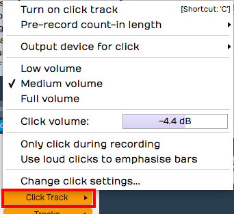
Click Settings
Enable Click - Another way to enable or disable click is to open the Click Track menu and select Turn on click track or Turn off click track. That does the very same thing as pressing C or clicking the Click button in the transport bar.
Click Volume - Adjust the volume of the click using the Click Track > Volume slider. There are also Low volume (-14dB) , Medium volume (-4.4dB), and Full volume (0dB) presets available.
📝 Note: Curiously, Full volume is not actually full. The Volume slider goes to +3db. That's three more than Full volume if you are keeping score.
Count-in - While recording, you can have the click start a bit before the cursor position. This gives you time to get into the groove before performing. Enable the count-in from Click Track > Pre-record count-in length. Select from none, one bar, two bar, or two beats for the count-in length.
With count-in enabled, you will hear the click during recording. If the cursor is at the beginning of the Edit, you will hear the count-in then the cursor will start moving. If the cursor is not at the start, it will actually jump back by the count-in length and play from there.
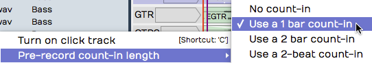
Count-in Options
Click During Playback - If you want to hear the click during playback, make sure to leave Click Track > Only click during recording disabled.
Emphasize Bars - To clearly hear the downbeat of each bar, enable Click Track > Use loud clicks to emphasize bars. With that enabled, Waveform uses a different sound for the first beat of each bar.
Click Sound - To change what sounds are used for the click, select Click Track > Change Click Settings. This opens the Click Track Settings dialog box. From here, you can change the samples used to make the click sound. Just select the audio files for the normal and emphasized beats. If you leave the File properties blank, you will get the default sounds.
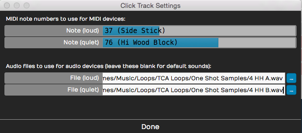
Configuring the Click Sound
Not too many people still do this, but it's possible to use an external MIDI sound module for your click sound. If you are inclined to do that, you can set the MIDI note numbers in the Click Track Settings dialog box.
Click Output Device - If you want to redirect your click so it's not coming through your main speakers, look at the click output device options (Click Track > Output device for click). Normally and by default this is set to Default audio output. You can pick any audio output on your system or even any MIDI output. If you select a MIDI output, it should be a sound module of some sort. When using MIDI for the click, you can set the click sound note numbers as explained in the previous section.
Using a click is an essential reference tool for studio recording, so it is great to have a synchronized click built-in and ready to go.
Listening on Headphones While Recording¶
Ideally, you will monitor what you're recording through headphones, and set up the level and mix on your audio interface outside of Waveform. Most audio interfaces give you the ability to mix your live input with the playback from previous tracks. You use the mixer on the audio interface to balance the live input sound with the sound being played back by Waveform.

Audio Interface Mix Knob
Simple audio interfaces have a mix knob that allows you to mix between the inputs (your mic) and playback (previously recorded tracks). For example, when recording a vocal leave the mix knob just about in the middle. Half of what you hear is the live input off your mic, the other half is what's being played back from Waveform.
Some audio interfaces do not have a specific knob on the front panel to control the mixer level, and instead have an application that you run alongside Waveform that features a virtual mixer. These applications allow you to set up the monitor mix in your headphones separately from what's happening in the recording software.
Live Input Monitoring¶
There are situations where you need to use live input monitoring through Waveform, rather than through your interface. The two main use cases for that that are when playing through virtual instruments, or virtual guitar amps while recording. We will cover the details later in the book, but here are a few points for those curious about such things.
Step 1. Disable Hardware Monitoring - To try live monitoring through Waveform, first set up a track and arm it for recording. Now, play something into the input using a mic, guitar, or other instrument. At this point you shouldn't really hear anything through Waveform to your headphones or speakers.
Step 2. Enable Live Input Monitor - Now make sure the input is selected and look for the Live Input Monitoring option in properties. Click to enable it. You should hear the input going through Waveform and back out to your speakers (or headphones).
The downside is latency. You might possibly notice a delay between when you play a note and when you hear it. It's a time lag between you sing and when you hear it in your headphones. At high buffer settings it will sound like an annoying delay slap or echo. At lower buffer settings it might sound like a hollowness if you are singing with headphones on. When playing an instrument, you might not hear any problem at all.
To really hear the effect of latency, try turning the buffer size up to 1024 or even more. Then as you play you'll hear a noticeable delay between when you sing, speak or play a note and when you hear it.
📝 Note: Latency delay is more of a problem for singers than it is for somebody playing guitar or another instrument. The sound of your voice is coupled through your skull right into your ear with zero latency. When combined with your voice slightly delayed through the interface and software the result might seem hollow or "phasey." This won't be recorded, but might throw you off during recording.
Why then would you ever use live input monitoring? You need it for guitar amp simulators and for virtual instruments. For normal vocal and instrument recording, it may be preferable to use your audio interface to provide zero latency monitoring.
If at First You Don't Succeed¶
With a track armed, hit Record and record away. Press Record a second time (or Spacebar) to stop recording. If you don't like what you've recorded select the Audio clip and press Delete or Backspace. Rewind and try again! You can alternatively press Undo (Cmd + Z / Ctrl + Z) to undo the last recording take.
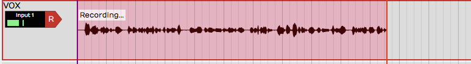
Recording in Process
Abort Record and Delete the Take¶
If you are impatient to delete a failed recording take, then you will love this feature: Abort recording and delete the take. With a single keystroke you cancel the take, throw it out, rewind to the beginning, and get set to try again. The Abort button on the transport does the same thing.
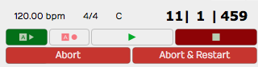
Abort Buttons on the Transport During Recording
There is a variation on this feature: Abort recording, delete take, and restart. That does the same thing, but then drops right back into recording. This action appears on the transport during recording as the button * *.
Recording a Stereo Signal¶
If you are recording a pair of microphones or a stereo source like a keyboard, you can treat two adjacent inputs as a stereo pair. This is done in the Settings tab, Audio Devices page. Click on an input then enable Treat as Stereo Pair in properties.
Now instead of two inputs, you have one stereo input. This will appear over in the Edit when you select inputs for a track. The pairs are always created with the odd numbered input on the left and the even numbered input on the right.
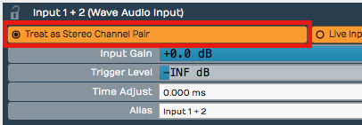
Treat as Stereo Pair
When you record from a stereo input, you'll wind up with a stereo clip showing both the left and the right waveforms.
Retrospective Record¶
You know how there are times where you wish you were recording because a practice take was so amazing? Or maybe a singer sings a pickup just before the downbeat. Waveform's "Retrospective Record" feature actually keeps a recording buffer running for any track that has an input set up.
To enable this feature, from the Menu choose Option > Retrospective record and select the buffer size. We find that the 30-second buffer is usually enough to safe-guard against chopped off picks or endings. For live shows or recording speeches, set it to 10 minutes.
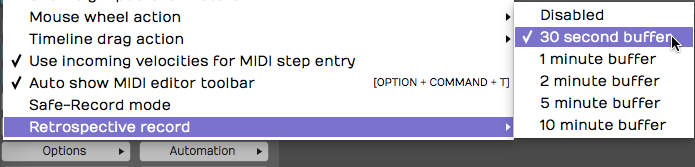
Enabling Retrospective Record
To recover lost audio, simply click the retrospective record icon in the upper right corner of the Waveform window. The buffered audio will be added as Audio clips to the appropriate tracks. If you click the icon while the transport is still running, the audio will be synched to the timeline. If you click the icon with the transport stopped, the audio will be placed at the cursor. In that case you will need to manually align the clip to the track.
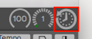
Click Retrospective Record Icon
Retrospective record doesn't consume much CPU and is a great safeguard against losing important audio or a killer take.
Safe-Record Mode¶
When recording shows, doing long recordings, or if you ever need to leave your computer unattended while it's recording, consider enabling Safe-Record (Options > Safe-Record mode).
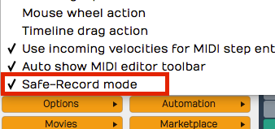
Safe Record Mode
In safe-record mode, you starting recording in the normal way. However, as soon as recording starts, Waveform shows a the Safe Record modal dialog box. You can't do anything in Waveform including stop the recording without entering the four key shortcut.
Here is how to get out of safe-record mode:
OS X: Shift + Opt + Cmd + R Windows: Shift + Alt + Ctrl + R
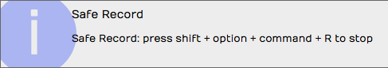
How to Exit Safe Recording
Those are the defaults, but you can change those to any other crazy key combination you want.
Moving On¶
That was a lot of information about recording audio in Waveform. In the next chapter we will continue on with overdub recording.